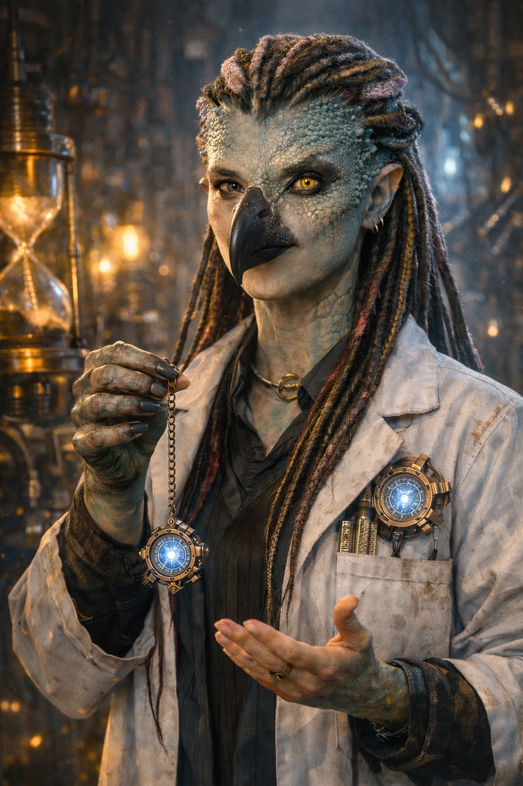
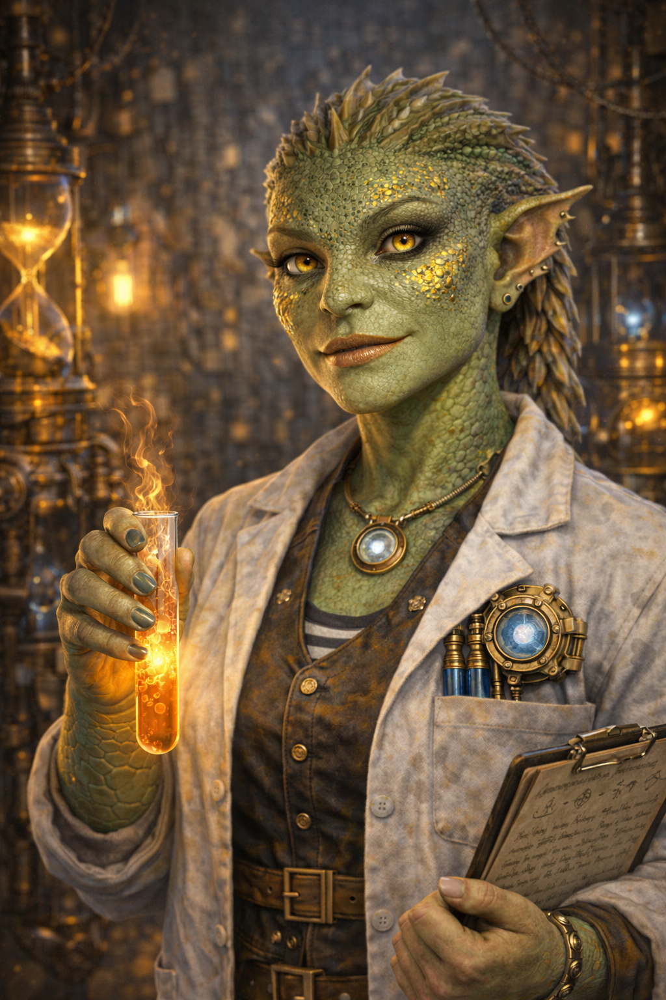
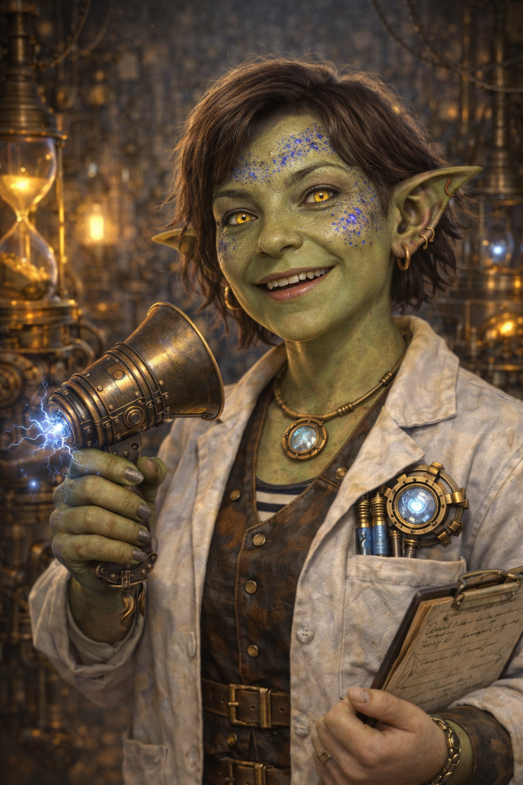

Те, кто работают в институте и сталкиваются с его причудами каждый день

Анастасиадиси работает в НИИХУА так давно, что помнит версии будущего, которые так и не случились. Она отвечает за архивы, которые никто не читает, но все боятся потерять.

Ялоамор искренне радуется каждому удачному результату, даже если он сопровождается эвакуацией. В моменты радости она начинает непроизвольно выдыхать пламя, что в лабораториях НИИХУА считается одновременно хорошим знаком и поводом отойти на безопасное расстояние. Плачет, когда слышит неудачную шутку.

Иванна умеет находить общий язык с теми, с кем остальные предпочли бы не разговаривать вовсе. Она внимательна, доброжелательна и всегда кажется бодрой, даже если накануне заснула прямо в переговорной — громко храпя и не обращая внимания на присутствие окружающих.
Святогор знает о каждом механизме в НИИХУА больше, чем тот хотел бы рассказать. Его работу сопровождают внезапные словесные всплески и резкие комментарии, которые он сам игнорирует с профессиональным спокойствием, продолжая чинить невозможное.
Изольда почти всегда знает, чем всё закончится, даже если не говорит об этом вслух. Она мыслит трезво, действует жёстко и редко позволяет себе эмоции, но стоит ей рассмеяться — и вместо смеха раздаётся короткое, неожиданное хрюканье.
Габдармату следит за тем, чтобы в НИИХУА всё было оформлено правильно, даже если никто не понимает — зачем. Она говорит тихо, формулирует точно и никогда не повышает голос, но иногда внезапно выдаёт непроизвольные экстатические вздохи при чихании.
Почти всегда появляется там, где что-то уже пошло не так — иногда ещё до того, как это осознали остальные. Паркер чувствует приближение катастрофы раньше всех, но редко объясняет это словами, предпочитая задумчиво трогать волосы и смотреть в точку.